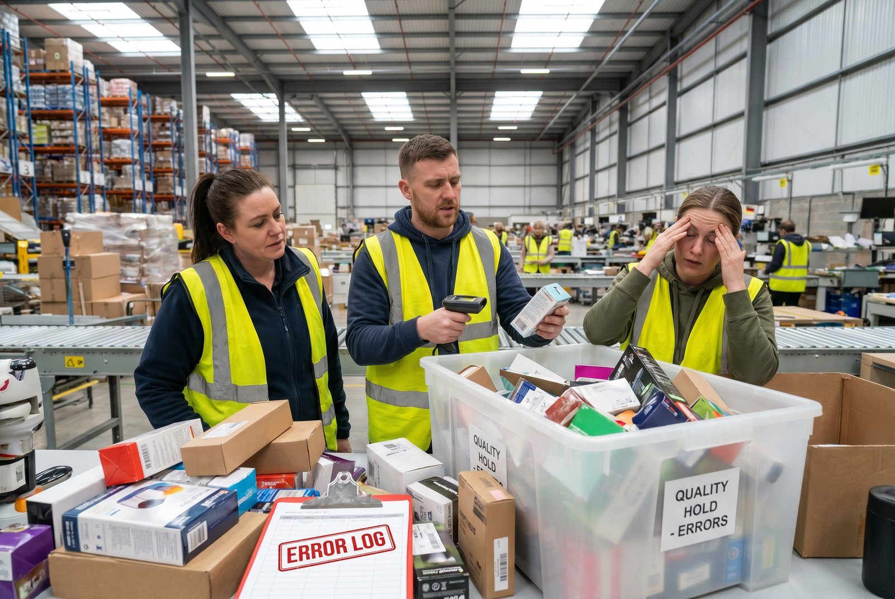

2,4 % fejlrate. Det lyder som baggrundsstøj.
Det er det ikke. Ved 200 ordrer om dagen er det knap fem fejl. Hver dag. Hver fejl koster mellem 300 og 1.800 kr., alt efter om varen kommer hjem igen, og om kunden gør.
Det er 1.400 til 8.600 kr. om dagen. På et år med 250 arbejdsdage: fra 360.000 kr. til godt 2 mio.
Det opdager du først når du laver regnestykket. Og så er der gået 11 måneder.
De 6 primære årsager til pakkefejl
👉 Kæmper I med det samme? Se hvordan SmartPack fjerner pakkefejl
Pakkefejl kommer sjældent fra uopmærksomme medarbejdere. De kommer fra systemfejl, proceshuller og værktøjer der ikke er designet til lagerdrift. Her er de seks årsager vi ser igen og igen:
1. Ingen scanningsvalidering ved plukning
Når plukker ikke scanner varen inden pakning, er det menneskets hukommelse der er “systemet”. Det fungerer i 3 måneder. Så ansætter I en ekstra medarbejder. Så kommer Black Friday. Så er fejlraten pludselig 4,2%.
Fejlrate uden scanning: 2,4-4,2%. Med scanning: 0,3-0,6%. Det er ikke tæt på, det er en faktor 7. Og scanning koster 180-320 kr./måned per medarbejder. Én fejl om ugen betaler det.
Se også: Plukruter er ineffektive: det koster dig timer dagligt. Ineffektive plukruter øger stress og dermed fejlraten.
2. Forkert vareplacering på lageret
To varianter af samme produkt står ved siden af hinanden. Plukker griber den forkerte. Det er ikke hans fejl, det er en layoutfejl. Forkert vareplacering er en af de mest underrapporterede årsager til pakkefejl, fordi ingen forbinder dem direkte.
3. Manglende pakkeproces
Har I en nedskreven standard for, hvad der tjekkes inden kassen lukkes? Hvis svaret er “nej” eller “det ved plukker godt”, er I særligt eksponeret. Læs Manglende processer: når hver medarbejder gør det på sin måde for konkrete tjeklister.
4. Ordredata er forsinket eller forkert
Hvis jeres webshop, ERP og lager ikke er synkroniseret i realtid, kan plukker arbejde på en ordre der allerede er ændret af kunden. Resultatet: pakket efter gammel ordre, leveret forkert.
5. Peakbelastning uden ekstra kontrol
Under Black Friday og jul går fejlraten typisk op med 40-80% fordi tempoet øges uden at processen ændres. Kassen-lukkes-hurtigere-fejlen er klassisk.
6. Skjulte lagerfejl der ikke opdages før pakning
Forkert vare på forkert hylde. Blandet lager. Varer der er registreret forkert ved modtagelse. De 7 skjulte lagerfejl der dræber din bundlinje kortlægger præcis hvilke fejl der undersøger sig før det er for sent.
Hvad koster en pakkefejl
De fleste regner kun returfragten med. Det er for lidt. Men mange regnestykker går den anden vej og lægger et stort tal for tabt kunde oveni, så totalen ser målt ud, selv om halvdelen er et skøn. Derfor er tallene her delt i to.
Det du kan tælle
| Omkostningspost | Lavt sat | Højt sat |
|---|---|---|
| Kundeservicetid (18 min. × 350 kr./time) | 105 kr. | 175 kr. |
| Ny forsendelse til kunden | 50 kr. | 142 kr. |
| Ekstra håndtering og lagertid | 50 kr. | 95 kr. |
| Enten returfragt, begge veje | 89 kr. | 178 kr. |
| eller varen afskrevet, hvis den ikke hentes hjem | kostprisen | kostprisen |
| Hårde omkostninger i alt | ca. 300 kr. | ca. 590 kr. |
Læg mærke til de to linjer der starter med enten og eller. Du betaler den ene eller den anden, aldrig begge. På ordrer under omkring 300 kr. kan det ikke betale sig at hente varen hjem, fordi returfragten alene æder værdien. Så lader du kunden beholde varen, sender en ny og afskriver den første. Regningen bliver den samme størrelse, den ser bare anderledes ud.
Det du skønner
Så er der spørgsmålet om kunden kommer igen. Det kan ingen tælle, kun skønne, og skønnet flytter totalen mere end alt det andet tilsammen.
| Skøn | Lavt sat | Højt sat |
|---|---|---|
| Tabt fremtidig kunde | 0 kr. | 1.200 kr. |
Men størrelsen på den linje afgøres ikke af fejlen. Den afgøres af den næste time.
En kunde der får besked af sig selv, inden hun når at skrive, "vi har sendt forkert, den rigtige er afsted i dag, behold den anden", bliver som regel. Nogle gange fortæller hun det endda videre. En kunde der skal bevise fejlen, vente på en returlabel og vente på sine penge, er væk. Om det er rimeligt eller ej er lige meget. Det er det der sker.
Derfor er nul kroner i tabellen ikke et teoretisk tal. Det er hvad god håndtering koster. Og det er den eneste linje i hele regnestykket I stadig kan påvirke, når fejlen først er sket. Returfragten og kundeservicetiden er brugt i samme øjeblik pakken går forkert. Om kunden kommer igen, bliver afgjort bagefter.
Den samme fejl kan altså koste 300 kr. eller 1.800 kr., og forskellen ligger i svaret, ikke i fejlen.
I E-logistik Guide 2026, som vi har skrevet sammen med Dansk Erhverv, regner vi konservativt med omkring 100 kr. for den linje og lander på cirka 350 kr. pr. fejl i alt. Det tal holder for en webshop hvor folk køber sjældent. Sælger du varer folk køber igen hver måned, er en tabt kunde værd langt mere, og så ryger totalen op mod 1.800 kr.
Regn med mellem 300 og 1.800 kr. pr. fejl. Hvor i spændet I ligger, afgøres af to ting: hvad en kunde er værd hos jer, og hvordan I håndterer fejlen. Det kan I selv regne ud: dækningsbidrag pr. ordre gange antal ordrer en tilfreds kunde lægger, gange den andel der ikke kommer igen efter en fejl.
Eksempel: 500 ordrer om dagen og 1,5 % fejlrate, altså syv til otte fejl om dagen.
Kun de hårde omkostninger: 7,5 × 300 kr. = 2.250 kr. om dagen, omkring 560.000 kr. på et år med 250 arbejdsdage.
Med et fuldt skøn for tabte kunder: 7,5 × 1.800 kr. = 13.500 kr. om dagen.
Selv det lave tal, det du kan tælle og dokumentere over for en revisor, er en fuldtidsmedarbejder betalt af fejl alene.
Sådan reducerer du pakkefejl til under 0,5%
Det kræver tre ting, og de skal implementeres i rækkefølge. Hvis I springer lag 1 over og går direkte til lag 3, spilder I tiden. Hvis I implementerer lag 1 men aldrig følger op med lag 3, stopper forbedringen efter 60 dage.
Lag 1: Scan-bekræftelse ved plukning (implementer dag 1)
- Plukker scanner stregkode på vare
- System bekræfter: rigtig vare til rigtig ordre
- Afvigelse stoppes - plukker kan ikke fortsætte
- Fejl logges automatisk
Effekt: Fejlrate falder fra 2,4% til 0,4-0,6% alene ved dette tiltag.
Gør IKKE: Køb scannere uden WMS-integration. Manuel registrering af scannede data reducerer fejlraten med 20%, ikke 80%.
Lag 2: Pakkestation-tjekliste (implementer inden dag 7)
- Tjek antal varer mod plukliste
- Visuel bekræftelse (photo check ved dyre varer)
- Luk kasse - print label
- Systemet markerer ordre som pakket
Gør IKKE: Lav en to-siders tjekliste. Passer den ikke på én A4, bliver den ikke brugt.
Lag 3: Daglig fejlgennemgang (start mandag morgen)
- 5 min. morgenmøde: hvilke fejl opstod i går?
- Kategoriser: forkert pluk, forkert mængde, beskadiget
- Find rodårsag - ikke skyldig person
- Ret proces, ikke medarbejder
Typiske fejltagelser når I forsøger at løse pakkefejl
1. “Vi ansætter en ekstra kvalitetskontrollant”
En ekstra person der tjekker andres arbejde er den dyreste og mindst effektive løsning. Det løser ikke rodårsagen.
2. “Vi straffer dem der laver fejl”
Fejlraten ændrer sig ikke. Folk lærer at skjule fejl i stedet. Data forsvinder. Problem forværres.
3. “Vi løser det næste måned”
Ved 2% fejlrate og 300 ordrer/dag: næste måned koster jer 162.000 kr. i fejl. Ikke næste kvartal. Næste måned.
Tjekliste: næste skridt
- ✓ Mål jeres aktuelle fejlrate (antal reture / antal ordrer)
- ✓ Identificer top-3 årsager (scan log, returnotater, kundeservice)
- ✓ Indfør scanningsvalidering ved plukning
- ✓ Skriv pakkeproces på én A4 og hæng ved pakkestation
- ✓ Kør daglig fejlgennemgang i 30 dage
- ✓ Mål fejlrate igen efter 30 dage
Konsekvens af at vente: Ved 200 ordrer/dag og 2,4% fejlrate koster næste måned 178.540 kr. i fejl. Ikke næste kvartal. Næste måned.
SmartPack og pakkefejl
SmartPack WMS bygger scanningsvalidering ind som standard - plukker kan fysisk ikke bekræfte en ordre med forkert vare. Systemet logger alle afvigelser automatisk, så I kan se mønstre over tid, ikke bare fejltal, men årsager.
Hvornår giver det mening:
- Over 80 ordrer/dag - under det er ROI-perioden for lang
- Fejlrate over 1,2% - under det kan proces-optimering klare det
- Minimum 2 fuldtidsmedarbejdere på lager
Hvornår giver det IKKE mening:
- Under 50 ordrer/dag - visuel kontrol + tjekliste er billigere
- Sæsonlager med 3 måneders aktivitet - implementeringstid er for lang
Typisk resultat: Fejlrate under 0,5% inden for 60 dage. Det svarer til besparelse på 420.000-1,8 mio. kr./år ved 200-500 ordrer/dag.